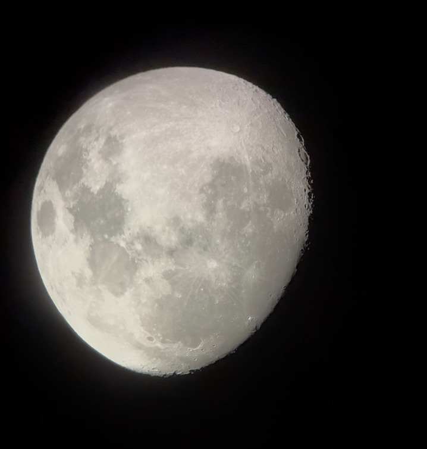
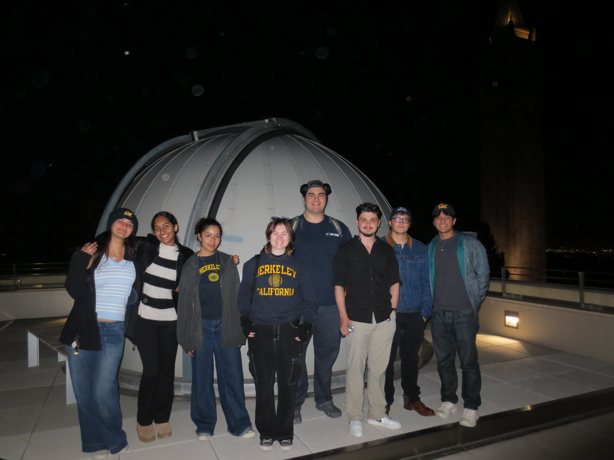
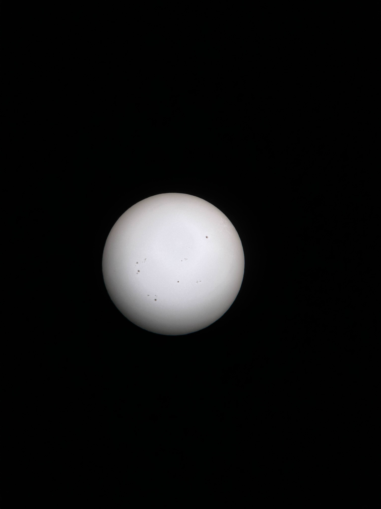

The Moon
Photo Credit: Milana Berhe
This photo was taken on a Newtonian telescope during a star party.

Star Party – Fall 2025
Photo Credit: Milana Berhe
Members trained to operate Schmidt-Cassegrain, Newtonian, and the Richard Treffers Dome Telescope.

The Sun
Photo Credit: Sage Remulla
Solar filter allows us to clearly observe sun spots.
Spring 2026 Schedule
(Upcoming) March 12:
Astrophotography Workshop
(Upcoming) March 5:
Academic Marathon Kickoff (cluster competition!)
February 26:
Lighting Talks in collaboration with Society of Physics Students
February 19:
Cold Email Workshop
February 12:
Valentine’s Day Themed Scavenger Hunt (cluster games)
February 5:
Star Hopping Workshop
January 29:
Spring 2026 Infosession